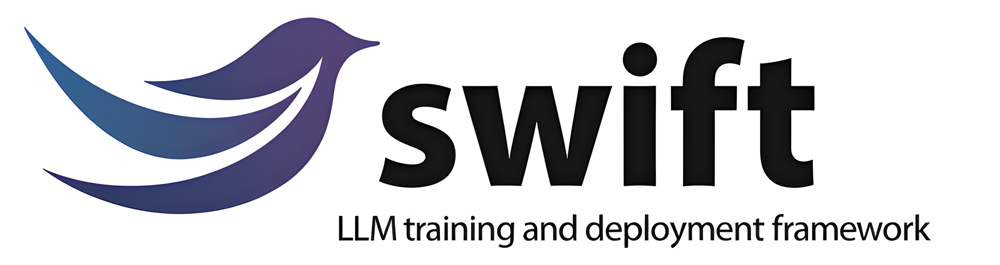

01 / EVALUATION FRAMEWORK↗
▥EvalScope评测流程
模型 / API评测任务结果报告
CAPABILITYPERFORMANCEINSIGHT
AI ENGINEERING · OPEN SOURCE
让模型能力，
经得起验证。
ModelScope 开源开发者，南京大学 NLP 组硕士。
从模型评测、后训练，到更可靠的 AI 系统。
01 / SELECTED WORK
从模型评测，到训练服务与模型微调。
让 AI 的能力可衡量，让实践更容易。
显示全部 3 个项目

模型微调 · 强化学习 · 推理部署
OFFICIAL PROJECT IDENTITY02 / RESEARCH & PUBLICATIONS
研究兴趣涵盖自然语言处理、图表与数值推理问答、文档搜索，以及大模型训练基础设施。
显示全部 7 条学术记录
面向多租户后训练的可组合训练即服务基础设施。
围绕动态原始文档，在查询条件下探索和定位证据，研究无需预先建立持久索引的上下文搜索。
研究图表问答中的问题与图表对齐，通过弱监督学习连接语言问题与视觉信息。
从开源视角讨论云原生的模型即服务。
探索图表问答中的弱监督对齐建模。
结合细粒度检索器与多生成器集成，处理金融文本和表格中的数值推理问答。
“投稿记录”表示提交经历，不代表会议录用。FinQA 的预印本与同名投稿合并展示。记录更新于 2026 年 10 月
03 / EDUCATION
人工智能学院 · NLP 组
Nanjing University · Natural Language Processing计算机软件工程专业
Wuhan University · Software Engineering04 / WHAT I CARE ABOUT
关注能力边界、评测协议与结果分析。用可复现的实验，理解模型真正能做什么。
MEASURE WHAT MATTERS关注训练接口、资源调度与服务可靠性。把复杂的系统能力，变成容易使用的工具。
MAKE COMPLEXITY USABLE在代码、文档与验证之间持续迭代。让一个想法，从能够运行，走向能够复用。
BUILD IN THE OPEN05 / A LITTLE ABOUT ME
目前在阿里巴巴通义实验室的 ModelScope 团队工作，参与 EvalScope、Twinkle、ms-swift 等 AI 开源项目。
硕士毕业于南京大学人工智能学院 NLP 组，本科就读于武汉大学计算机软件工程专业。
喜欢把问题拆清楚，把想法写成代码，再让实践给出答案。
LET’S BUILD SOMETHING USEFUL